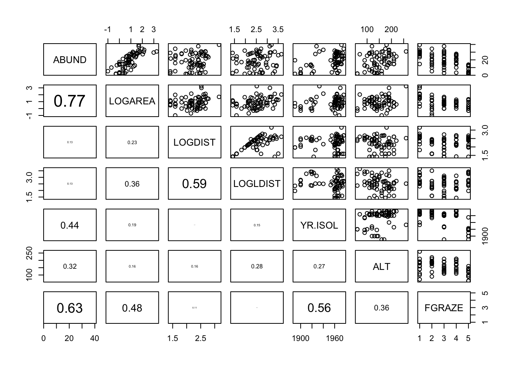

In the previous exercise you fitted a pre-conceived model which
included the main effects of the area of the forest patch
(LOGAREA), the grazing intensity (FGRAZE) and
the interaction between these two explanatory variables
(FGRAZE:LOGAREA). This was useful as a training exercise,
and might be a viable approach when analysing these data if an
experiment had been designed to test these effects only. However, if
other potentially important variables are not included in the model this
may lead to biased inferences (interpretation). Additionally, if the
goal of the analysis is to explore what models explain the data in a
parsimonious way (as opposed to formally testing hypotheses), we would
also want to include relevant additional explanatory variables.
Here we revisit the previous loyn data analysis, and ask if a
‘better’ model for these data could be achieved by including additional
explanatory variables and by performing model selection. Because we
would like to test the significance of the interaction between
LOGAREA, and FGRAZE, whilst accounting for the
potential effects of other explanatory variables, we will also include
LOGAREA, FGRAZE and their interaction
(FGRAZE:LOGAREA) in the model as before. Including other
interaction terms between other variables may be reasonable, but we will
focus only on the FGRAZE:LOGAREA interaction as we have
relatively little information in this data set (67 observations). This
will hopefully avoid fitting an overly complex model which will estimate
many parameters for which we have very little data. This is a balance
you will all have to maintain with your own data and analyses (or better
still, perform a power analysis before you even collect your data). No
4-way interaction terms in your models please!
It’s also important to note that we will assume that all the explanatory variables were collected by the researchers because they believed them to be biologically relevant for explaining bird abundance (i.e. data were collected for a reason). Of course, this is probably not your area of expertise but it is nevertheless a good idea to pause and think what might be relevant or not-so relevant and why. This highlights the importance of knowing your study organism / study area and discussing research designs with colleagues and other experts in the field before you collect your data. What you should try to avoid is collecting heaps of data across many variables (just because you can) and then expecting your statistical models to make sense of it for you. As mentioned in the lecture, model selection is a relatively controversial topic and should not be treated as a purely mechanical process (chuck everything in and see what comes out). Your expertise needs to be woven into this process otherwise you may end up with a model that is implausible or not very useful (and all models need to be useful!).
1. Import the ‘loyn.txt’ data file into RStudio and assign it to a
variable called loyn. Here we will be using all the
explanatory variables to explain the variation in bird density. If
needed, remind yourself of your data exploration you conducted
previously. Do any of the remaining variables need transforming
(i.e. AREA, DIST, LDIST) or
converting to a factor type variable (i.e. GRAZE)? Add the
transformed variables to the loyn dataframe.
loyn <- read.table("data/loyn.txt", header = TRUE)
str(loyn)
## 'data.frame': 67 obs. of 8 variables:
## $ SITE : int 1 60 2 3 61 4 5 6 7 8 ...
## $ ABUND : num 5.3 10 2 1.5 13 17.1 13.8 14.1 3.8 2.2 ...
## $ AREA : num 0.1 0.2 0.5 0.5 0.6 1 1 1 1 1 ...
## $ DIST : int 39 142 234 104 191 66 246 234 467 284 ...
## $ LDIST : int 39 142 234 311 357 66 246 285 467 1829 ...
## $ YR.ISOL: int 1968 1961 1920 1900 1957 1966 1918 1965 1955 1920 ...
## $ GRAZE : int 2 2 5 5 2 3 5 3 5 5 ...
## $ ALT : int 160 180 60 140 185 160 140 130 90 60 ...
loyn$LOGAREA <- log10(loyn$AREA)
loyn$LOGDIST <- log10(loyn$DIST)
loyn$LOGLDIST <- log10(loyn$LDIST)
# create factor GRAZE as it was originally coded as an integer
loyn$FGRAZE <- factor(loyn$GRAZE)
2. Let’s start with a very quick graphical exploration of any
potential relationships between each explanatory variable (collinearity)
and also between our response and explanatory variables (what we’re
interested in). Create a pairs plot using the function
pairs()of your variables of interest. Hint: restrict the
plot to the variables you actually need. An effective way of doing this
is to store the names of the variables of interest in a vector
VOI <- c("Var1", "Var2", ...) and then use the naming
method for subsetting the data set Mydata[, VOI]. If you
feel like it, you can also add the correlations to the lower triangle of
the plot as you did previously (don’t forget to define the function
first).
# define the panel.cor function from ?pairs
panel.cor <- function(x, y, digits = 2, prefix = "", cex.cor, ...)
{
usr <- par("usr")
par(usr = c(0, 1, 0, 1))
r <- abs(cor(x, y))
txt <- format(c(r, 0.123456789), digits = digits)[1]
txt <- paste0(prefix, txt)
if(missing(cex.cor)) cex.cor <- 0.8/strwidth(txt)
text(0.5, 0.5, txt, cex = cex.cor * r)
}
# subset the variables of interest
VOI<- c("ABUND", "LOGAREA", "LOGDIST", "LOGLDIST", "YR.ISOL", "ALT", "FGRAZE")
pairs(loyn[, VOI], lower.panel = panel.cor)
# There are varying degrees of correlation between explanatory variables which
# might indicate some collinearity, i.e. LOGAREA and FGRAZE (0.48), LOGDIST and
# LOGLDIST (0.59) and YR.ISOL and FGRAZE (0.56). However, the relationships
# between these explanatory variables are quite weak so we can probably
# include these variables in the same model (but keep an eye on things).
# There also seems to be a reasonable spread of observations across these
# pairs of explanatory variables which is a good thing.
# The relationship between the response variable ABUND and all the explanatory
# variables is visible in the top row:
# Some potential relationships present like with LOGAREA (positive),
# maybe ALT (positive) and FGRAZE (negative).
3. Now, let’s fit our maximal model. Start with a model of
ABUND and include all explanatory variables as main
effects. Also include the interaction LOGAREA:FGRAZE but no
other interaction terms as justified in the preamble above. Don’t forget
to include the transformed versions of the variables where appropriate
(but not the untransformed variables as well otherwise you will have
very strong collinearity between these variables!). Perhaps, call this
model M1.
M1 <- lm(ABUND ~ LOGDIST + LOGLDIST + YR.ISOL + ALT + LOGAREA + FGRAZE +
FGRAZE:LOGAREA, data = loyn)
4. Have a look at the summary table of the model using the
summary() function. You’ll probably find this summary is
quite complicated with lots of parameter estimates (14) and P values
testing lots of hypotheses. Are all the P values less than our cut-off
of 0.05? If not, then this suggests that some form of model selection is
warranted to simplify our model.
summary(M1)
##
## Call:
## lm(formula = ABUND ~ LOGDIST + LOGLDIST + YR.ISOL + ALT + LOGAREA +
## FGRAZE + FGRAZE:LOGAREA, data = loyn)
##
## Residuals:
## Min 1Q Median 3Q Max
## -14.976 -1.972 0.142 2.388 10.631
##
## Coefficients:
## Estimate Std. Error t value Pr(>|t|)
## (Intercept) 33.963217 93.824477 0.362 0.71880
## LOGDIST 0.882214 2.204341 0.400 0.69061
## LOGLDIST -0.253543 1.709295 -0.148 0.88264
## YR.ISOL -0.008283 0.047374 -0.175 0.86186
## ALT 0.016979 0.018630 0.911 0.36622
## LOGAREA 3.733668 1.914379 1.950 0.05643 .
## FGRAZE2 -6.757424 4.132084 -1.635 0.10790
## FGRAZE3 -12.488020 4.542801 -2.749 0.00816 **
## FGRAZE4 -16.133695 4.838990 -3.334 0.00157 **
## FGRAZE5 -17.191221 4.991340 -3.444 0.00113 **
## LOGAREA:FGRAZE2 4.877440 2.565757 1.901 0.06275 .
## LOGAREA:FGRAZE3 9.410212 3.223378 2.919 0.00514 **
## LOGAREA:FGRAZE4 14.166912 4.304081 3.292 0.00178 **
## LOGAREA:FGRAZE5 2.617845 3.347001 0.782 0.43761
## ---
## Signif. codes: 0 '***' 0.001 '**' 0.01 '*' 0.05 '.' 0.1 ' ' 1
##
## Residual standard error: 5.009 on 53 degrees of freedom
## Multiple R-squared: 0.8034, Adjusted R-squared: 0.7551
## F-statistic: 16.66 on 13 and 53 DF, p-value: 2.644e-14
5. Let’s perform a first step in model selection using the
drop1() function and use an F test based model
selection approach. This will allow us to decide which explanatory
variables may be suitable for removal from the model. Remember to use
the test = "F" argument to perform F tests when
using drop1(). Which explanatory variable is the best
candidate for removal and why?
What hypothesis is being tested when we do this model selection step?
# Wait: why can't we use information from the 'summary(M1)' or 'anova(M1)' functions
# to do this?
# the 'summary' table tests if the coefficient for each explanatory variable
# is significantly different from zero.
# the 'anova' tests for the significance of the proportion of variation explained
# by a particular term in the model.
# The ANOVA table also allows testing the overall significance of a categorical explanatory
# variable (like FGRAZE) which involves several parameters together (one for each level),
# which is quite is handy. But the results of this ANOVA are based on sequential
# sums of squares and therefore the order of the variables in the model
# (which is arbitrary here) matters.
# We could change the order but there are too many possible permutations.
# Summary P values don't suffer from this problem but tests different hypotheses.
# It would be useful to use an ANOVA that doesn't depend on the order
# of inclusion of the variables, this is effectively what 'drop1' does.
drop1(M1, test = "F")
## Single term deletions
##
## Model:
## ABUND ~ LOGDIST + LOGLDIST + YR.ISOL + ALT + LOGAREA + FGRAZE +
## FGRAZE:LOGAREA
## Df Sum of Sq RSS AIC F value Pr(>F)
## <none> 1329.8 228.20
## LOGDIST 1 4.02 1333.8 226.40 0.1602 0.690605
## LOGLDIST 1 0.55 1330.3 226.23 0.0220 0.882644
## YR.ISOL 1 0.77 1330.6 226.24 0.0306 0.861862
## ALT 1 20.84 1350.6 227.24 0.8306 0.366220
## LOGAREA:FGRAZE 4 405.04 1734.8 238.02 4.0358 0.006259 **
## ---
## Signif. codes: 0 '***' 0.001 '**' 0.01 '*' 0.05 '.' 0.1 ' ' 1
# LOGLDIST is the least significant (p = 0.88), and therefore makes the least
# contribution to the variability explained by the model, with respect to
# the number of degrees of freedom it uses (1). This variable is a good candidate
# to remove from the model
6. Update and refit your model and remove the least significant
explanatory variable (from above). Repeat single term deletions with
drop1() again using this updated model. You can update the
model by just fitting a new model without the appropriate explanatory
variable and assign it to a new name (M2). Alternatively
you can use the update() function instead (I show you how
to do this in the solutions).
# new model removing LOGLDIST
M2 <- lm(ABUND ~ LOGDIST + YR.ISOL + ALT + LOGAREA + FGRAZE +
LOGAREA:FGRAZE, data = loyn)
# or use a shortcut with the update() function:
M2 <- update(M1, formula = . ~ . - LOGLDIST) # "." means all previous variables
# now redo drop1() on the new model
drop1(M2, test = "F")
## Single term deletions
##
## Model:
## ABUND ~ LOGDIST + YR.ISOL + ALT + LOGAREA + FGRAZE + LOGAREA:FGRAZE
## Df Sum of Sq RSS AIC F value Pr(>F)
## <none> 1330.3 226.23
## LOGDIST 1 3.64 1334.0 224.41 0.1478 0.702134
## YR.ISOL 1 0.78 1331.1 224.27 0.0317 0.859332
## ALT 1 22.24 1352.6 225.34 0.9029 0.346233
## LOGAREA:FGRAZE 4 406.74 1737.1 236.10 4.1275 0.005451 **
## ---
## Signif. codes: 0 '***' 0.001 '**' 0.01 '*' 0.05 '.' 0.1 ' ' 1
# YR.ISOL is now the least significant (p = 0.859), hence makes the least
# contribution to the variability explained by the model,
# with respect to the number of degrees of freedom it uses (1)
7. Again, update the model to remove the least significant
explanatory variable (from above) and repeat single term deletions with
drop1().
M3 <- update(M2, formula = . ~ . - YR.ISOL)
drop1(M3, test = "F")
## Single term deletions
##
## Model:
## ABUND ~ LOGDIST + ALT + LOGAREA + FGRAZE + LOGAREA:FGRAZE
## Df Sum of Sq RSS AIC F value Pr(>F)
## <none> 1331.1 224.27
## LOGDIST 1 3.28 1334.4 222.43 0.1355 0.714237
## ALT 1 25.33 1356.5 223.53 1.0468 0.310729
## LOGAREA:FGRAZE 4 405.99 1737.1 234.10 4.1936 0.004916 **
## ---
## Signif. codes: 0 '***' 0.001 '**' 0.01 '*' 0.05 '.' 0.1 ' ' 1
# LOGDIST now the least significant (p = 0.714) and should be removed from
# the next model.
8. Once again, update the model to remove the least significant
explanatory variable (from above) and repeat single term deletions with
drop1().
M4 <- update(M3, formula = . ~ . - LOGDIST)
drop1(M4, test = "F")
## Single term deletions
##
## Model:
## ABUND ~ ALT + LOGAREA + FGRAZE + LOGAREA:FGRAZE
## Df Sum of Sq RSS AIC F value Pr(>F)
## <none> 1334.4 222.43
## ALT 1 22.84 1357.2 221.57 0.9584 0.331805
## LOGAREA:FGRAZE 4 408.56 1743.0 232.33 4.2864 0.004273 **
## ---
## Signif. codes: 0 '***' 0.001 '**' 0.01 '*' 0.05 '.' 0.1 ' ' 1
# ALT is not significant (p = 0.331)
9. And finally, update the model to remove the least significant
explanatory variable (from above) and repeat single term deletions with
drop1().
# and finally drop ALT from the model
M5 <- update(M4, formula = . ~ . - ALT)
drop1(M5, test = "F")
## Single term deletions
##
## Model:
## ABUND ~ LOGAREA + FGRAZE + LOGAREA:FGRAZE
## Df Sum of Sq RSS AIC F value Pr(>F)
## <none> 1357.2 221.57
## LOGAREA:FGRAZE 4 389.3 1746.6 230.47 4.0874 0.00556 **
## ---
## Signif. codes: 0 '***' 0.001 '**' 0.01 '*' 0.05 '.' 0.1 ' ' 1
# the LOGAREA:FGRAZE term represents the interaction between LOGAREA and
# FGRAZE. This is significant (p = 0.005) and so our model selection
# process comes to an end.
10. If all goes well, your final model should be
lm(ABUND ~ LOGAREA + FGRAZE + LOGAREA:FGRAZE) which you
encountered in the previous exercise. Also, you may have noticed that
the output from the drop1() function does not include the
main effects of LOGAREA or FRGRAZE. Can you
think why this might be the case?
# As the interaction between LOGAREA and FGRAZE was significant at each step of
# model selection process the main effects should be left in our model,
# irrespective of significance. This is because it is quite difficult to
# interpret an interaction without the main effects. The drop1
# function is clever enough that it doesn't let you see the P values for the
# main effects, in the presence of their significant interaction.
# Also note, because R always includes interactions *after* their main effects
# the P value of the interaction term (p = 0.005) from the model selection
# is the same as P value if we use the anova() function on our final model
# Check this:
anova(M5)
## Analysis of Variance Table
##
## Response: ABUND
## Df Sum Sq Mean Sq F value Pr(>F)
## LOGAREA 1 3978.1 3978.1 167.0669 < 2.2e-16 ***
## FGRAZE 4 1038.2 259.5 10.9000 1.241e-06 ***
## LOGAREA:FGRAZE 4 389.3 97.3 4.0874 0.00556 **
## Residuals 57 1357.3 23.8
## ---
## Signif. codes: 0 '***' 0.001 '**' 0.01 '*' 0.05 '.' 0.1 ' ' 1
drop1(M5, test= "F")
## Single term deletions
##
## Model:
## ABUND ~ LOGAREA + FGRAZE + LOGAREA:FGRAZE
## Df Sum of Sq RSS AIC F value Pr(>F)
## <none> 1357.2 221.57
## LOGAREA:FGRAZE 4 389.3 1746.6 230.47 4.0874 0.00556 **
## ---
## Signif. codes: 0 '***' 0.001 '**' 0.01 '*' 0.05 '.' 0.1 ' ' 1
11. Now that you have your final model, you should go through your model validation and model interpretation as usual. As we have already completed this in the previous exercise I’ll leave it up to you to decide whether you include it here (you should be able to just copy and paste the code).
Please make sure you understand the biological interpretation of each of the parameter estimates and the interpretation of the hypotheses you are testing.
# Biologically: confirming what we already found out in the previous exercise:
# There is a significant interaction between the area of the patch and the level
# of grazing
# However, some observations are poorly predicted (fitted) using the set of
# available explanatory variables (i.e. the two very large forest patches)
# Interpretation:
# Bird abundance might increase with patch area due to populations being more
# viable in large patches (e.g. less prone to extinction),
# or perhaps because there is proportionally less edge effect in larger
# patches, and this in turn provides more high quality habitat for species
# associated with these habitat patches
# The negative effect of grazing may be due to grazing decreasing resource
# availability for birds, for example plants or seeds directly, or insects
# associated with the grazed plants. There may also be more disturbance of birds
# in highly grazed forest patches resulting in fewer foraging opportunities
# or chances to mate (this is all speculation mind you!).
# Methodologically:
# Doing model selection is difficult without intrinsic / expert knowledge
# of the system, to guide what variables to include.
# Even with this data set, many more models could have been formulated.
# For example, for me, theory would have suggested to test an interaction
# between YR.ISOL and LOGDIST (or LOGLDIST?),
# because LOGDIST will affect the dispersal of birds between patches
# (hence the colonisation rate), and the time since isolation of the patch may
# affect how important dispersal has been to maintain or rescue populations
# (for recently isolated patches, dispersal, and hence distance to nearest
# patches may have a less important effect)
OPTIONAL questions if you have time / energy / inclination!
A1. If we weren’t aiming to directly test the effect of the
LOGAREA:FGRAZE interaction statistically (i.e. test this
specific hypothesis), we could use AIC to perform model selection.
Repeat the model selection you did above, but this time use the
drop1() function and perform model selection using AIC
instead. Don’t forget, if we want to perform model selection based on
AIC with the drop1() function we need to omit the
test = "F" argument)
# This time, we are not doing any specific hypothesis testing, rather we are
# attempting to select a model with the 'best' goodness of fit with the minimal
# number of estimated parameters.
# We will start with a reasonably complex but PLAUSABLE model (this is the same
# model we started with using F test based model selection above.
M.start.AIC<- lm(ABUND ~ LOGLDIST + LOGDIST + YR.ISOL + ALT + LOGAREA + FGRAZE +
LOGAREA:FGRAZE, data = loyn)
drop1(M.start.AIC)
## Single term deletions
##
## Model:
## ABUND ~ LOGLDIST + LOGDIST + YR.ISOL + ALT + LOGAREA + FGRAZE +
## LOGAREA:FGRAZE
## Df Sum of Sq RSS AIC
## <none> 1329.8 228.20
## LOGLDIST 1 0.55 1330.3 226.23
## LOGDIST 1 4.02 1333.8 226.40
## YR.ISOL 1 0.77 1330.6 226.24
## ALT 1 20.84 1350.6 227.24
## LOGAREA:FGRAZE 4 405.04 1734.8 238.02
A2. Refit your model with the variable associated with the lowest AIC
value removed. Run drop1() again on your updated model.
Perhaps call this new model M2.AIC.
# So, our starting model with no variables removed has an AIC of 228.20. If we
# remove the interaction term `LOGAREA:FGRAZE` from the model then this results
# in a big increase in AIC (238.02 - 228.20 = 9.82) so this suggests that there
# is substantial evidence that the interaction should remain in the model. The
# models without `LOGLDIST`, `LOGDIST`, `YR.ISOL` all have pretty much the
# same AIC value (around 226) so in practice we could remove any of them. Let's
# remove the term that results in the model with the lowest AIC which is the
# `LOGLDIST` variable (AIC 226.23).
M2.AIC <- update(M.start.AIC, formula = . ~ . - LOGLDIST)
drop1(M2.AIC)
## Single term deletions
##
## Model:
## ABUND ~ LOGDIST + YR.ISOL + ALT + LOGAREA + FGRAZE + LOGAREA:FGRAZE
## Df Sum of Sq RSS AIC
## <none> 1330.3 226.23
## LOGDIST 1 3.64 1334.0 224.41
## YR.ISOL 1 0.78 1331.1 224.27
## ALT 1 22.24 1352.6 225.34
## LOGAREA:FGRAZE 4 406.74 1737.1 236.10
A3. Refit your model with the variable associated with the lowest AIC
value removed and run drop1() again on your new model
(M3.AIC).
# Ok, as the model without the variable `YR.ISOL` has the lowest AIC (224.27)
# let's update our model and remove this variable.
M3.AIC <- update(M2.AIC, formula = . ~ . - YR.ISOL)
drop1(M3.AIC)
## Single term deletions
##
## Model:
## ABUND ~ LOGDIST + ALT + LOGAREA + FGRAZE + LOGAREA:FGRAZE
## Df Sum of Sq RSS AIC
## <none> 1331.1 224.27
## LOGDIST 1 3.28 1334.4 222.43
## ALT 1 25.33 1356.5 223.53
## LOGAREA:FGRAZE 4 405.99 1737.1 234.10
A4. Repeat your model selection by removing the variable indicated by the model with the lowest AIC.
# So, now the model without `LOGDIST` has the lowest AIC (222.43) so we should
# refit the model without this variable and run `drop1()` again.
M4.AIC <- update(M3.AIC, formula = . ~ . - LOGDIST)
drop1(M4.AIC)
## Single term deletions
##
## Model:
## ABUND ~ ALT + LOGAREA + FGRAZE + LOGAREA:FGRAZE
## Df Sum of Sq RSS AIC
## <none> 1334.4 222.43
## ALT 1 22.84 1357.2 221.57
## LOGAREA:FGRAZE 4 408.56 1743.0 232.33
A5. Rinse and repeat as above.
# And the model without the variable `ALT` has an AIC of 221.57 which is about
# the same as the model with `ALT` (AIC 222.43), so let's remove this variable
# from the model as this suggests that the simpler model fits our data just as
# well as the more complicated model.
M5.AIC <- update(M4.AIC, formula = . ~ . - ALT)
drop1(M5.AIC)
## Single term deletions
##
## Model:
## ABUND ~ LOGAREA + FGRAZE + LOGAREA:FGRAZE
## Df Sum of Sq RSS AIC
## <none> 1357.2 221.57
## LOGAREA:FGRAZE 4 389.3 1746.6 230.47
# OK, so now we have a model with the main effects of LOGAREA, FGRAZE and the
# interaction term LOGAREA:FGRAZE. When we remove the interaction term the
# AIC value increases by 8.9 (230.47-221.57) and this suggests that if we
# remove the interaction term the model fit is significantly worse. Therefore we
# should leave it in and finish our model selection here.
If all goes well, your final model should be
lm(ABUND ~ LOGAREA + FGRAZE + LOGAREA:FGRAZE). This is the
same model you ended up with when using the F test based model
selection. This might not always be the case and generally speaking AIC
based model selection approaches tend to favour more complicated minimum
adequate models compared to F test based approaches.
We don’t need to re-validate or re-interpret the model, since we have already done this previously.
I guess the next question is how to present your results from the model selection process (using either F tests or AIC) in your paper and/or thesis chapter. One approach which I quite like is to construct a table which includes a description of all of our models and associated summary statistics. Let’s do this for the AIC based model selection but the same principles apply when using F tests (although you will be presenting F statistics and P values rather than AIC values).
Although you can use the output from the drop1() (and do
a bit more wrangling) let’s make it a little simpler by fitting all of
our models and then use the AIC() function to calculate the
AIC values for each model rather than drop1(). Details on
how to do this are given in the solutions to this exercise.
# one way of constructing a summary table for reporting the results:
# create a vector of all the models compared during out model selection
model.formulas<- c(
"LOGLDIST + LOGDIST + YR.ISOL + ALT + LOGAREA + FGRAZE + LOGAREA:FGRAZE",
"LOGDIST + YR.ISOL + ALT + LOGAREA + FGRAZE + LOGAREA:FGRAZE",
"ALT + LOGDIST + LOGAREA + FGRAZE + LOGAREA:FGRAZE",
"ALT + LOGAREA + FGRAZE + LOGAREA:FGRAZE",
"LOGAREA + FGRAZE + LOGAREA:FGRAZE")
# fit each model. Need to use the noquote() function to remove the
# quotations around our model formula otherwise you will get an error when
# using the lm() function.
# You will also need to paste the response variable 'ABUND ~ '
# together with out explanatory variables to create a valid model formula
M.start <- lm(noquote(paste('ABUND ~', model.formulas[1])), data = loyn)
M.step2 <- lm(noquote(paste('ABUND ~', model.formulas[2])), data = loyn)
M.step3 <- lm(noquote(paste('ABUND ~', model.formulas[3])), data = loyn)
M.step4 <- lm(noquote(paste('ABUND ~', model.formulas[4])), data = loyn)
M.step5 <- lm(noquote(paste('ABUND ~', model.formulas[5])), data = loyn)
# obtain the AIC values for each model. Note: these will be different
# than those obtained with the drop1() function due to a small difference in
# how AIC is calculated. This isn;t a problem, just don't mix and match
# the AIC values form drop1 and AIC functions.
model.AIC<- c(AIC(M.start),
AIC(M.step2),
AIC(M.step3),
AIC(M.step4),
AIC(M.step5))
# create a dataframe of models and AIC values
summary.table<- data.frame(Model = model.formulas,
AIC= round(model.AIC, 2))
# Sort the models from lowest AIC (preferred) to highest (least preferred)
summary.table<- summary.table[order(summary.table$AIC), ]
# Add the difference in AIC with respect to best model
summary.table$deltaAIC<- summary.table$AIC - summary.table$AIC[1]
# print the dataframe to the console
summary.table
## Model AIC deltaAIC
## 5 LOGAREA + FGRAZE + LOGAREA:FGRAZE 413.71 0.00
## 4 ALT + LOGAREA + FGRAZE + LOGAREA:FGRAZE 414.57 0.86
## 3 ALT + LOGDIST + LOGAREA + FGRAZE + LOGAREA:FGRAZE 416.41 2.70
## 2 LOGDIST + YR.ISOL + ALT + LOGAREA + FGRAZE + LOGAREA:FGRAZE 418.37 4.66
## 1 LOGLDIST + LOGDIST + YR.ISOL + ALT + LOGAREA + FGRAZE + LOGAREA:FGRAZE 420.34 6.63| Model | AIC | deltaAIC |
|---|---|---|
| LOGAREA + FGRAZE + LOGAREA:FGRAZE | 413.71 | 0.00 |
| ALT + LOGAREA + FGRAZE + LOGAREA:FGRAZE | 414.57 | 0.86 |
| ALT + LOGDIST + LOGAREA + FGRAZE + LOGAREA:FGRAZE | 416.41 | 2.70 |
| LOGDIST + YR.ISOL + ALT + LOGAREA + FGRAZE + LOGAREA:FGRAZE | 418.37 | 4.66 |
| LOGLDIST + LOGDIST + YR.ISOL + ALT + LOGAREA + FGRAZE + LOGAREA:FGRAZE | 420.34 | 6.63 |
End of the model selection exercise